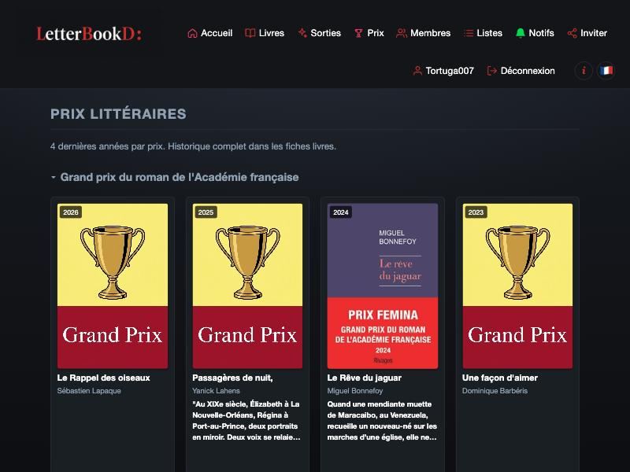

Prix littéraires
À quoi ça sert : Parcourir les lauréats récents des grands prix littéraires français. Utile pour nourrir les propositions du prochain livre du mois et découvrir des livres primés de référence.

Parcours
Chaque prix a son pliage (<details>) qu'on ouvre/ferme. À l'intérieur, les 4 dernières années sont exposées sous forme de cartes 'Grand Prix' (coupe dorée) ou 'Prix Femina' (couverture du livre lauréat). Chaque carte : année, titre, auteur, extrait du résumé. Clique une carte pour atterrir sur la fiche du livre. L'historique complet d'un prix est visible via la fiche de ses lauréats, pas sur cette page.
Chaînes d'action
Chaque ligne décrit un déclencheur dans l'interface, ce qu'il ouvre (modal ou formulaire), et l'effet produit.
| Déclencheur | Modal / Champs | Effet |
|---|---|---|
| Chevron (▸/▾) à côté d'un nom de prix | — | Déplie ou replie la section du prix. Un seul prix peut être déplié à la fois (name='prizes-acc'). |
| Carte d'un lauréat | — | Ouvre la fiche du livre lauréat avec les chips des prix remportés. |